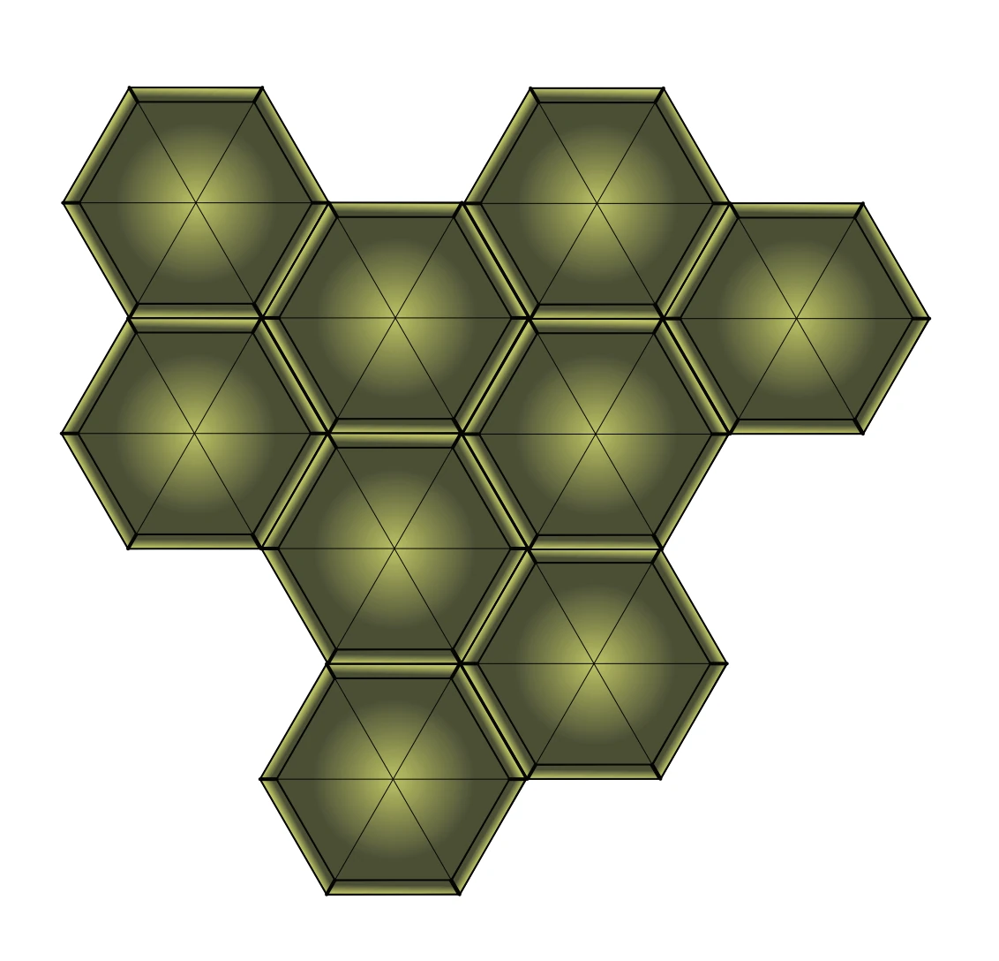
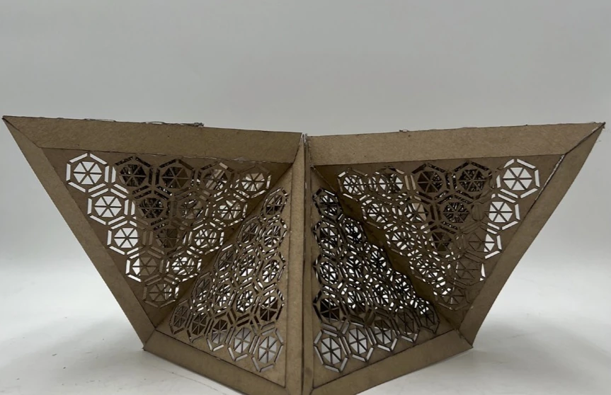
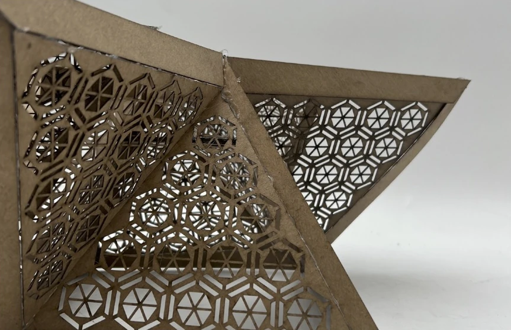
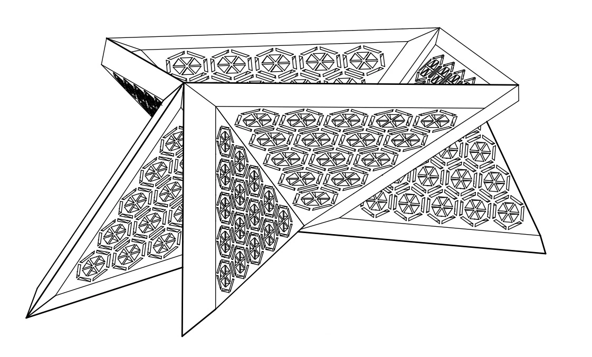
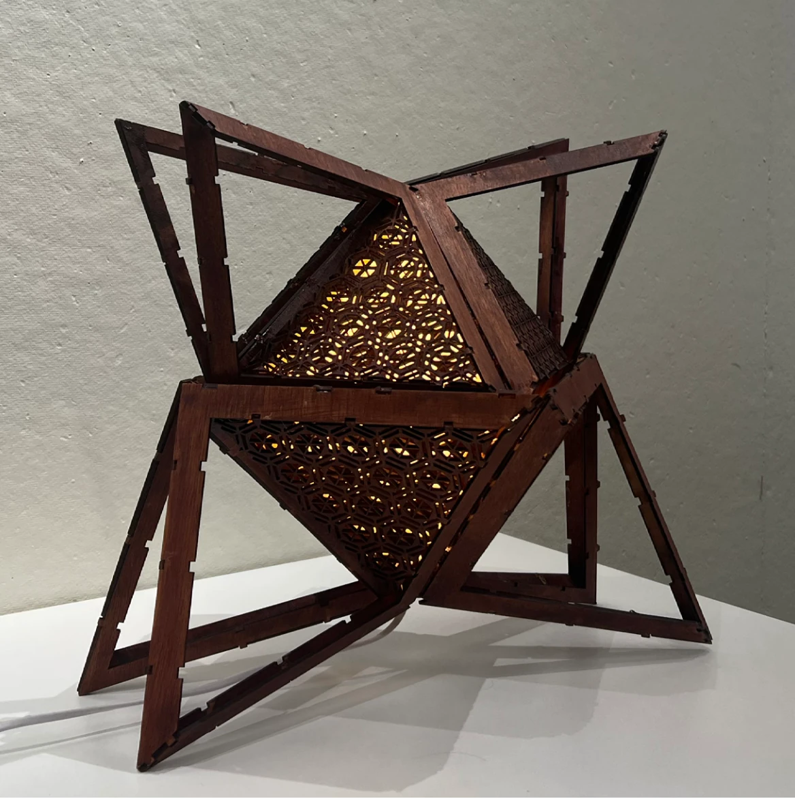
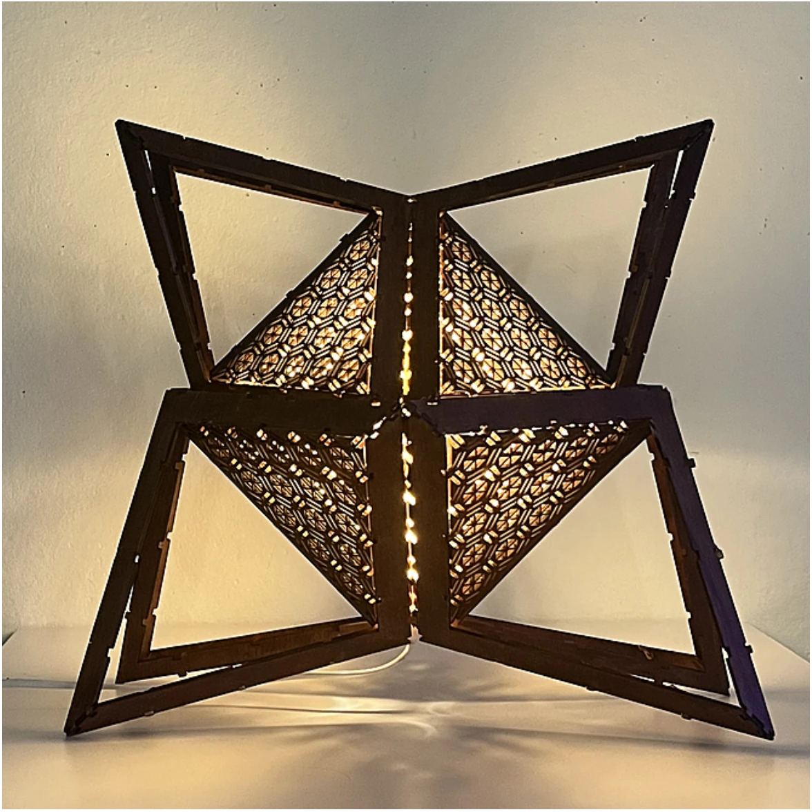

Ostra
A patterned wooden light, developed from the geometry of a cowfish.
- Year
- 2025
- Duration
- 4 months
- Context
- Design Studio I
- Focus
- Biological systems · Lighting

A natural pattern.
A constructed light.
Ostra begins with the hexagonal organization of a cowfish’s exoskeleton. Repetition, subdivision, and depth become a geometric language for a lighting object.
The project moved from observing natural systems to making two-dimensional compositions, physical models, and a working light. Each stage asked how a surface could act as both structure and filter.


Pattern becomes
a surface.
Cardboard studies brought the pattern into three dimensions. Folded triangular modules and overlapping layers create depth while leaving openings for light.




Layer. Offset.
Frame.
Two patterned surfaces are offset from one another within a wooden frame. The assembly drawing makes that relationship visible: a layered core held by a larger, open structure.




The surface changes
when illuminated.
Light reveals the depth between the patterned panels and projects their geometry onto the surroundings. The wooden frame remains legible while the inner surfaces shift between a solid pattern and a source of light.

